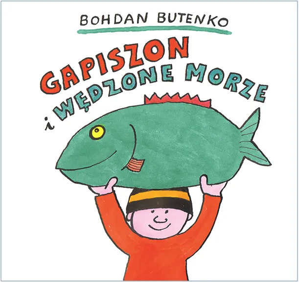
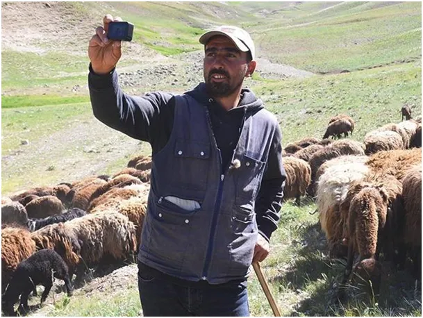
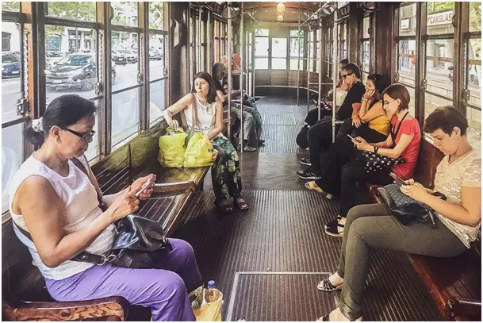

Głupcio
Często dostaję pytania typu "Czy w świetle słabych dowodów jakie są przedstawiane Pan także uważa, że Ziemia jest kulą?"
Dziś też do mnie trafił taki dociekliwy człowiek i powinienem mu odpisać, że kulą nie jest, tylko elipsoidą o krótszej pionowej osi, ale jemu oczywiście chodziło o to, czy Ziemia raczej nie jest rodzajem naleśnika. Jest w Polsce kilka milionów ludzi, którzy wyznają z wielką pasją podobne głupstwa. Dziś każdy z nas może przekonać się o kulistości Ziemi robiąc proste doświadczenie z pomiarem długości cienia w różnych miejscach na globusie. Jeśli mieszkamy np. w Gdańsku to możemy poprosić kogoś w Atenach, aby zmierzył cień metrowej tyczki tego samego dnia w południe. Reszta to prosta trygonometria, a dodatkowo z tego ćwiczenia możemy obliczyć obwód Ziemi.
Pisałem o tym tu: "Jak tysiące lat temu w szkołach obliczano obwód Ziemi" https://pawelklimczewski.pl/2023/01/29/jak-3000-temu-w-szkolach-obliczano-obwod-ziemi/
Skąd taki regres w zdolności do weryfikacji prawdy na masową skalę? Znamy banalną odpowiedź: "utrata autorytetów, upadek zaufania do państwa i instytucji, itp." Ale czy to się stało przez ostatnie 3 lata, czy może trwa już znacznie dłużej?
Jedną z moich pierwszych lektur był "Gapiszon". Przygody mało rozgarniętego głuptasa, nazwanego "Gapiszonem" od gapy, jak wtedy mawiano na różne "guły". Gapiszon był intelektualną nadzieją dowartościowujących się średniaków, których w populacji jest 68%, widzących swoją przewagę nad PRL-owskim bohaterem.
Dziś mógłby być nazwany Głupciem, ale na szczęście nie jest, bo mamy dobrą nazwę dla globalnej głupoty. Porzućmy "globcio" skoro się ochładza a nie ociepla i pochylmy się nad głupcio.

Głupcio postępuje od dawna, jest ściśle związany z powszechnym obowiązkiem szkolnym, pierwsze próby przymusowej edukacji na dużą skalę w XVIII wieku podjęły protestanckie państwa niemieckie, Habsburgowie naśladowali te pomysły. W praktyce na pełną skalę ludzkość nauczyła się czytać i pisać dopiero po Pierwszej Wojnie Światowej. Poza czytaniem uczono rachunków i historii, czyli oficjalnej wersji przeszłości.
Przed tym okresem ludzie czerpali wiedzę o świecie z opowieści, a wiedza potrzebna do zdrowego życia była przekazywana w domu od starszych do młodszych. Dzieci przyjmowały system etyczny i intelektualny rodziców i potem przekazywały go swojemu potomstwu. Nauka czytania umożliwia masowe przekazywanie informacji poprzez prasę. Masowe kształtowanie postaw i opinii stało się możliwe po 7 tysiącach lat historii. Marzyli o tym najpotężniejsi cesarze i królowie, ale udało się dopiero w "demokracji". Radio i TV to już bardzo zaawansowane techniki wpływu, a kino jak mawiał Lenin "to najważniejsza ze sztuk". Dziś kino mamy w telefonach i zaledwie po 15 latach nieustannego bodźcowania stada, stado się słucha. Nieliczne jednostki próbujące pójść swoją ścieżką szybko są zaganiane przez owczarki w postaci pracodawców, urzędników, a nie rzadko przez swych krewnych i sąsiadów. Donoszenie w krajach wysoko rozwiniętych jest normą, co w czasie "plandemii" zostało potwierdzone.

Pouczające są współczesne historie z buszu, gdzie dzieci co dzień chodzą po 10 km do szkoły i nie uczestniczą w życiu rodziny. Gdy dorastają i tak nie dostaną żadnej pracy, bo w buszu pracy nie ma natomiast nie wiedzą jak przykryć dach trzciną, bo nie było ich w domu, gdy ojciec z matką naprawiali dach po burzy. Bezradni przykrywają swój dom blachą ze złomu, która w dzień się nagrzewa a nocą szybko stygnie, a ludzie chorują.
Jesteśmy świadkami historycznej chwili, gdy mimo 100 lat masowej edukacji świat oszalał i przyjmuję absurdalne narracje. Jak to możliwe ? Otóż od pierwszej klasy powtarzano mi w szkole, że szkoła "uczy, kształci, wychowuje", niestety z naciskiem na dwa ostatnie hasła. Kształci, czyli kształtuje ludzką mentalność oraz wychowuje, czyli narzuca normy etyczne. Obie te sfery przez tysiące lat były zarezerwowane dla rodziców, którzy związani ze swym potomstwem silnymi uczuciami robili, co mogli, aby ich dzieci w dorosłym życiu kierowali się swoim interesem.
Żyjemy w świecie, gdzie większość ludzi swojego interesu nie potrafi nawet zdefiniować a żyje ideami i intencjami zupełnie oderwanymi, a często sprzecznymi z interesem własnym. Ludzie w afektach politycznych głosują na partie, które wyraźnie im mówią "zabierzemy wam na ochronę przyrody" lub "pozbawimy was prawa swobodnego przemieszczania się", a lud ich wybiera w imię postępu. Głupcio ma się dobrze i dopiero się rozkręca, ale jak każda bestia ma słabe punkty niczym bazyliszek. Na truciznę i jad najprostszym rozwiązaniem jest niejedzenie ich. Pokażmy bazyliszkowi lustro zamiast zaglądać bestii w śmiertelne jej oblicze. Blokada mediów głównego nurtu to technicznie banalnie prosta sprawa, ale większość z nas ma stały głód nowości. Niczym to się nie różni od narkotycznego głodu, ale jest znacznie prostsze do wyleczenia. Zero Internetu w telefonie na początek to dobry krok. Zero! internet tylko w komputerze lub na tablecie, którego używamy np. tylko w domu.
Paweł Klimczewski